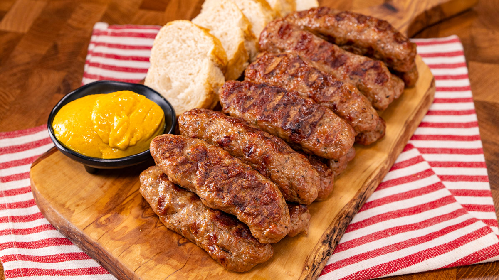

Grilled Minced Meat Rolls recipe

Description:
The traditional Romanian Grilled Minced Meat Rolls also known as "mititei" is by far the most popular recipe when it comes to
family gatherings, cooking in free air, parties, they literally suit every sort of social interaction between human beings, as long as there is a grill, of course.
The fact that they are so accessible, tasty and easy to make, but mainly the fact that they go well with beer, makes them the most popular reicpe for this sorts of situations.
Ingredients:
- 2 pounds ground beef
- 8 ounces chopped suet
- 1/4 teaspoon baking soda
- 1/2 teaspoon caraway seeds
- 3 cloves garlic, minced
- salt and pepper to taste
- 1 teaspoon finely ground juniper berries
- 2 tablespoons water
- 3 tablespoons vegetable oil
- 2 tablespoons beef broth
Steps:
- In a medium bowl, mix together the ground beef, suet, baking soda, caraway seeds, garlic, salt, pepper and juniper berries using your hands.
Mix with your hands for about 15 minutes, adding a little bit of the water at a time.
This part can be made a few hours ahead of time if you like.
-
Preheat a grill for high heat. With wet hands form the meat into rolls about 3 inches long and 1 inch thick.
Brush lightly with oil.
-
Grill the meat for 5 to 10 minutes, basting frequently with a mixture of beef broth and any remaining oil, until well done.